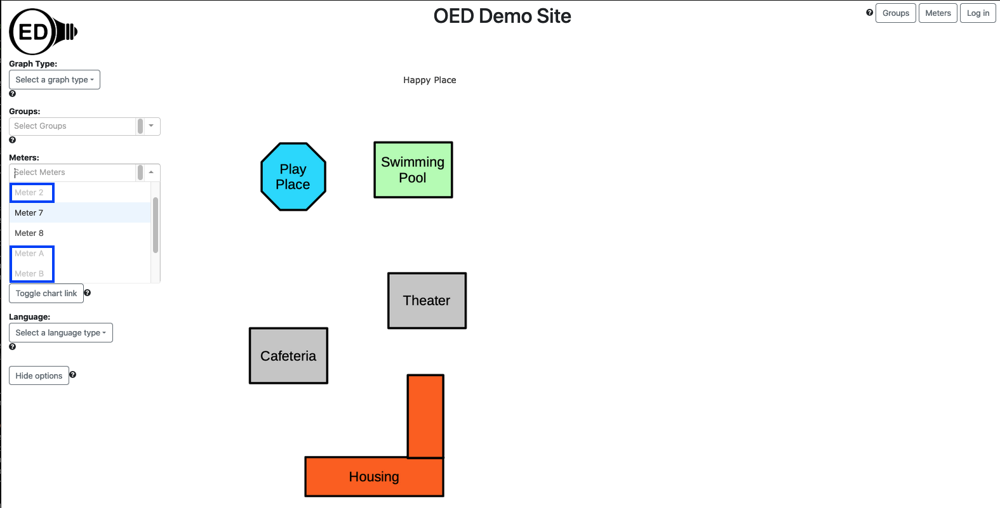

The map graphic gives a spacial representation of energy usage. Typically a simplified map of buildings and any important landmarks is used as the image for a map. A circle is placed on the map for each graphed item where the size of the circle represents its usage. An OED site can have as many maps as it wishes. To get this graphic, you click the "Map" choice (highlighted with a blue box in the next figure). This is a simple map with a few buildings where the usage is given for "Play Place" (Meter 7), "Theater" (Meter 8) and "Cafeteria" (Group 1 & 2). Note that there are hover items as with other graphics and this figure shows the time range, what the circle represents (Groups 1 & 2) and its value. (The top values are the coordinates the graphics package uses and are not likely of interest.) As the size of the circles show, the "Cafeteria" used significantly more energy than the other two.

When you go to the map page, you can select the map you want to use. You do this by clicking the dropdown menu for "Maps:" and clicking the one you want (highlighted with a blue box in the next figure). This is very similar to what you do for a "Meter:" or "Group:". Note that if there is only one map then OED will automatically select it so the select in this case would not really be needed. Once you click on a map, it will appear in the graphic. If you already have meters selected that can be shown on the map then they will immediately appear. (See below for more on selecting meters.)

You select the meters or groups to graph in the usual way. OED will display each meter as an individual circle as shown in the figure above. In some cases the meter/group cannot be placed on the graph. This happens when its GPS coordinates do not lie within the map. Note that a meter/group without GPS coordinates provided by the admin of the site can never be placed on any map. To let the user know when a meter/group cannot be placed on the current map, its name is grayed out. These meters/groups cannot be selected. In the following figure, Meters 2, A and B are grayed out (highlighted with blue boxes) since they cannot be shown on the map. Meters 7 and 8 look normal since they can be shown on the map and selected.
If you selected Meter 7 and Meter 8 and Group 1 & 2 then you would see the graphic at the top of this page.
The circle represents the average daily usage over the time range chosen in the "Map Interval:". The allowed time ranges are "Day", "Week" and "4 Weeks" and highlighted in blue in the next figure. In this figure, the "Day" choice was selected and note that the circle sizes differ from the first figure since the relative usage is different for one day than 4 weeks. These time ranges are the same selections as on a bar graph. A selection on either the bar or map page impacts the other graphic. Note that there is no slider on the map page (this may change in the future) and changes to the slider on the bar graphic page does not change the time range on the map graphic. The value shown on the map is the same as on the last bar shown in the bar graphic except divided by the number of days for the time range. As with bar graphics, the overall dates graphed are the same as the selection in the line graphic. This means if you change the date range on the line graphic, the bar graphic changes to those dates and the map graphic also changes the circle size.

If a site has multiple maps that lie in different geographical locations, then a meter grayed out on one map might be displayable on another. Also, if you are on a different graphic type and are displaying a meter that cannot be shown on the map then it will not appear on the map and be grayed out on the "Meters:" list. If you return to another graphic, the meter will appear again since it can be shown.
OED consistently uses the same color for a meter/group across all graphic representations. The map graph may seem to have a lighter shade of color than the other graphics. This is due to making the circle partly transparent so you can see the underlying map image. If you look at the color the rectangle that pops up when you hover on the graph you will see it is the same as the color used for this item in other graphics.
The size of a circle is based on its area (not the diameter) so the circle area scales with usage. This was chosen since a study indicated that area is the better choice for user perception.
OED makes the circle size be from an internally set minimum and maximum size so that it ranges within a set percentage of the map size. Note this has a couple of important implications:
See explanation in line graphics for why data and time format varies with displayed language.